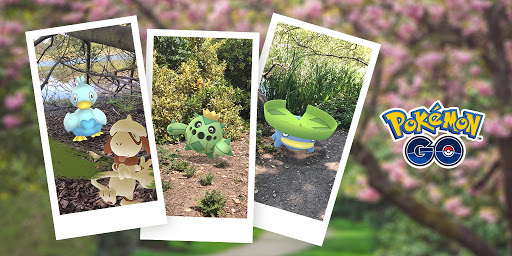

Nel luglio 2016, la collaborazione di giochi per app mobili tra Nintendo e Niantic pubblicarono Pokemon Go. Il gioco utilizza la realtà aumentata, ovvero il GPS e la fotocamera del tuo telefono, come parte del suo gameplay. Mentre passeggiano per la città, i giocatori possono scoprire i Pokemon posizionati nei dintorni e catturarli. Ciò ha portato a casi di "esercizio accidentale ", giocatori trovati nei parchi pubblici nel cuore della notte e altri che passeggiano in diretta televisiva . In tutto il mondo, organizzazioni non profit, agenzie governative e iniziative sociali a scopo di lucro hanno trovato modi unici per utilizzare Pokemon Go per ampliare la loro portata di messaggistica. Ecco ad esempio una iniziativa che ha intrapeso la Niantic il loro prodotto:
Dal 2018, Niantic celebra la Giornata della Terra collaborando con organizzazioni di tutto il mondo per ospitare le pulizie di parchi e spiagge, dando premi speciali in base al numero di allenatori che hanno partecipato. Sebbene le attività della Giornata della Terra siano state annullate nel 2020 a causa della pandemia di COVID-19, sono tornate quest'anno come parte della nuova Settimana della sostenibilità di Pokémon Go. I giocatori sono incoraggiati ad aiutare a combattere il cambiamento climatico e a prendersi cura del pianeta attraverso attività che includono la raccolta della spazzatura, la costruzione di hotel per le api, il cambiamento del modo in cui si spostano e il volontariato. Se condividono un'immagine e una descrizione su come stanno aiutando il pianeta su Facebook, Twitter o Instagram con #SustainableWIthNantic, la loro attività darà la possibilità di premi in-game .